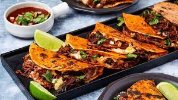

Tacos

These birria tacos are famous. They are possibly the most famous tacos you will find on social media. The image
of these tacos with the fried and crispy meat and cheese sticking out the top, being dunked into a deep red consommé fill my feed.
This recipe may look long, but it’s because I want to give you as much information as possible to create this flavorful meal on your own at home. This deep rich broth
and meat is great served as a stew. But if you want to go the extra few steps and fry up some tacos you will NOT be disappointed.
Ingredients
- 7-8 cups hot water
- 4 lbs chuck roast cut into 4 large chunks
- 2 lbs short ribs (bone in) or back ribs bone in
- 1 large white onion dry skins removed, cut in half crosswise
- 1 garlic bulb cut the narrow top off, no need to peel
- 1 carrot cut in half crosswise, then cut in half (4 large pieces of carrot)
- 5 bay leaves dried
- 8 guajillo chiles stems cut off and seeds removed
- 3 tbsp chicken boullion
- 1-2 tsp chili powder
- 1 tsp mexican oregano
- 1 tsp ground cumin
- 1 tsp salt (adjust to taste)
Instructions
- Combine Ingredients: In large pot
add meat, onion, garlic, carrots, bay leaves and dried peppers. Cover with water. (This uses my large 7 qt pot and fills it to the top!)
- Add Seasonings: Add chicken bouillon, oregano, cumin and salt, stir to combine. Bring to a boil.
- Skim: After 30 minutes, skim the top of the pot to remove impurities from the bone cooking out. (will look like little bits of foam on the top)
- Blend Peppers: Remove the peppers (should be softened)
and place in a blender or food processor. Blend until smooth, add up to 1/4 cup of broth if needed to help get a smooth consistency.
- Strain: Strain the peppers if needed to remove bits of skin (if using a high powered blender this step is not necessary).
- Combine: Add the blended peppers into the broth and stir to combine.
- Season: Add in the chili powder as desired to get a nice deep red color to the broth.
- Simmer: Cover and continue to simmer for about 3 hours or until meat is tender and easily shredding on it’s own. (remove lid and give a stir every 40 minutes or so. Can also taste the broth once the meat is cooked through and adjust seasonings as needed).
- Reserve Grease: Skim the grease from the top of the broth (SAVE THIS!) pour the grease into a small skillet or saucepan, this is used for making the tacos if desired.
- Remove the onion, garlic, carrots, and bay leaves from the broth. (these ingredients were in the broth for flavoring…people are more than welcome to eat and enjoy them, so save them if you want!)
Back to Main page